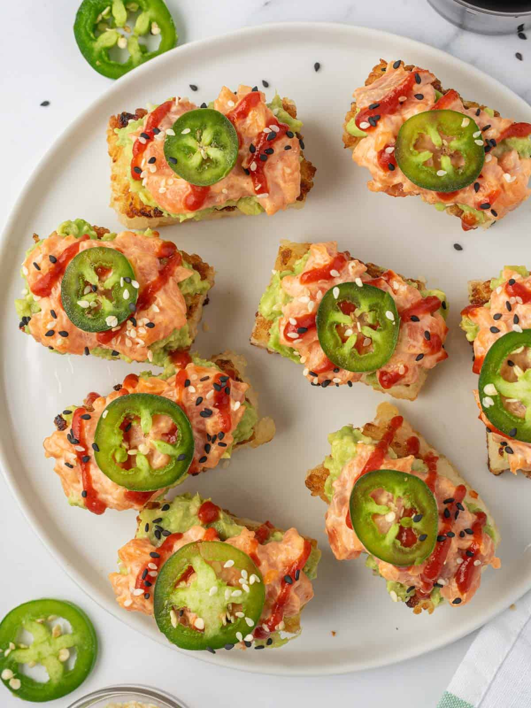

Spicy Salmon Crispy Rice

Ingredients:
- 2 cups Sushi rice or Japanese short grain rice
- 2 cups Water
- 1 ½ teaspoon kosher salt
- 3 tablespoons sugar
- 3 tablespoons rice vinegar
- Vegetable oil or canola oil
- For spicy salmon
- 1 pound sushi-grade salmon skin removed
- 2 tablespoons Kewpie Mayo
- 2 tablespoons sriracha
- 1 tablespoon soy sauce
- 1 teaspoon Sesame oil
- 1 tablespoon Sugar
- 1 stalk Green onions
- 1 Jalapeño(preference)
Steps
-
Make your spicy salmon mixture. Mince and chop your sushi-grade
salmon. Make your spicy mayo sauce (mix mayo, sriracha, soy sauce,
sesame oil, sugar and green onions) in a separate bowl. Pour over
your minced sushi-grade salmon. Mix well and set aside in the fridge
until ready to use.
-
Make your sushi rice. Take your sushi rice and rinse it well until
the water runs clear. Cook your rice according to the package
instructions over the stovetop, or in a rice cooker. In a bowl, make
your vinegar mixture by whisking salt, sugar and rice wine vinegar.
Pour over your cooked rice and fluff, mix until fully combined.
-
Freeze your rice! Transfer your warm or cool cooked sushi rice to a
sheet tray lined with plastic wrap or baking dish. Layer it on and
flatten it to even out. Top with more plastic wrap and freeze for 6
hours-overnight is best! You can also place the tray between ice as
well if you want to speed up the process.
-
Step 5: Fry your rice to make your crispy rice cakes Once frozen,
remove from plastic wrap and slice into your cube/circle or
rectangles for frying (up to your preference on size shape). Heat a
deep pot/skillet with oil until hot, hot to medium heat. Pan fry
your cubed rice until golden brown. Remove and let cool on paper
towels.
- Assemble
Sitemap